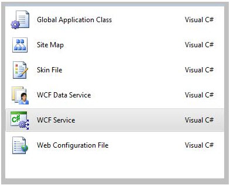

The following sections will outline components of a basic WCF web service. Before delving into the sections of WCF implementation, follow the steps for creating a WCF Service below.
Step 1:
Open Visual Studio.
Step 2:
File -> New Project -> WCF Service
